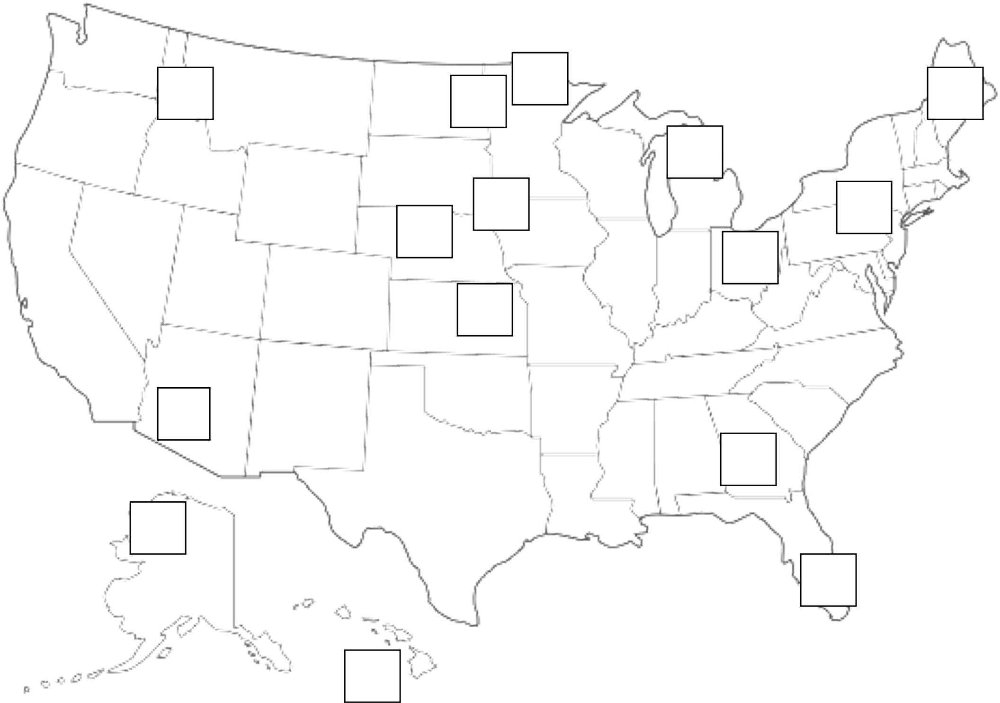

| Horizon | Texture | Color | Depth |
| Loam | 8YR 2/2 | 0-13 cm | |
| Loam | 8YR 3/4 | 13-28 cm | |
| Loam | 8YR 4/4 | 28-36 cm | |
| Loam | 8YR 4/4 | 36-51 cm | |
| Sand | 8YR 5/4 | 51+ cm |
10 Soil Classification
Objectives
- Identify soil epipedons, subsurface diagnostic horizons.
- Locate the 12 soil orders in the United States.
- Break down a taxonomic soil name.
10.1 INVESTIGATION A: Soil Classification
READ THESE INSTRUCTIONS COMPLETELY!
For all eight monoliths, determine the correct order of horizons from the choices given, epipedon, diagnostic subsurface horizon, and soil order/suborder. All monoliths are from Minnesota, except for the Cecil, which is from North Carolina. The most important take-aways are horizon nomenclatures and classifying a soil based on morphology. Characteristics are given to assist you with your classifications – use your 1 page cheat sheet!
Note: Mollic epipedons are darker than 3/3 (no matter what the hue) and must be at least 25cm (~10 inches) thick. If the epipedon is not mollic, it must be ochric or histic. None of these soils have an umbric epipedon. Bw = cambic (except for Bw that have sand/loamy sand textures – these are not considered as any diagnostic horizon for the purposes of classification); Bt = argillic; Bs, Bhs, Bhsm, etc. = spodic; Bo = oxic
10.2 SOIL 1: CROMWELL
HORIZON CHOICES: Bw1, A, Bw2, BA, 2C
NOTES: B.S. = 62%
Epipedon: Explain:
Diagnostic Subsurface: Explain:
Soil Order: Explain:
Soil Suborder: Explain:
10.3 SOIL 2: WEBSTER
HORIZON CHOICES: Cg, Ap, AC, A2, A1
NOTES: BS = 68%
| Horizon | Texture | Color | Depth |
| Silty Clay Loam | 10YR 2/1 | 0-15 cm | |
| Silty Clay Loam | 10YR 2/1 | 15-40 cm | |
| Clay Loam | 10YR 3/2 | 40-69 cm | |
| Clay Loam | 5Y 4/1 | 69-89 cm | |
| Clay Loam | 5Y 6/2 | 89+ cm |
Epipedon: Explain:
Diagnostic Subsurface: Explain:
Soil Order: Explain:
Soil Suborder: Explain:
10.4 SOIL 3: RIFLE
HORIZON CHOICES: Oa, Oe2, Oe1, Oe3, 2C
| Horizon | Texture | Color | Depth |
| Mucky-peat | 5YR 2/2 | 0-20 cm | |
| Mucky-peat | 5YR 2/2 | 20-51 cm | |
| Mucky-peat | 5YR 2/2 | 51-63 cm | |
| Muck | 5YR 2/1 | 63-94 cm | |
| Loam | 2Y 5/1 | 94+ cm |
Epipedon: Explain:
Diagnostic Subsurface: Explain:
Soil Order: Explain:
Soil Suborder: Explain:
10.5 SOIL 4: FARGO
HORIZON CHOICES: Cg, Bss, Bg1, Bg2, Bg3, Ap
NOTES: BS = 100%; large cracks open during the dry season; all horizons > 55% clay
| Horizon | Texture | Color | Depth |
| Silty Clay | 10YR 3 | 0-23 cm | |
| Silty Clay | 10YR 4/2 | 23-41 cm | |
| Clay | 2Y 3/1 | 41-53 cm | |
| Clay | 5Y 5/2 | 53-66 cm | |
| Clay | 2Y 5/2 | 66-86 cm | |
| Clay | 5Y 6/3 | 86+ cm |
Epipedon: Explain:
Diagnostic Subsurface: Explain:
Soil Order: Explain:
Soil Suborder: Explain:
10.6 SOIL 5: KALKASKA
HORIZON CHOICES: BC, A, E, Bhs, C, Bs
NOTES: BS = 42%
| Horizon | Texture | Color | Depth |
| Loamy Sand | 8YR 2/1 | 0-5 cm | |
| Loamy Sand | 8YR 6/1 | 5-27 cm | |
| Loamy Sand | 8YR 4/4 | 27-41 cm | |
| Loamy Sand | 5YR 3/3 | 41-54 cm | |
| Sand | 10YR 5/6 | 54-80 cm | |
| Sand | 10YR 6/4 | 80+ cm |
Epipedon: Explain:
Diagnostic Subsurface: Explain:
Soil Order: Explain:
Soil Suborder: Explain:
10.7 SOIL 6: ZIMMERMAN
HORIZON CHOICES: Bw2, A, Bw1, C
NOTES: BS = 41%
| Horizon | Texture | Color | Depth |
| Loamy Sand | 8YR 2/1 | 0-12 cm | |
| Loamy Sand | 8YR 6/1 | 12-43 cm | |
| Loamy Sand | 5YR 3/3 | 43-84 cm | |
| Loamy Sand | 10YR 6/4 | 84+ cm |
Epipedon: Explain:
Diagnostic Subsurface: Explain:
Soil Order: Explain:
Soil Suborder: Explain:
10.8 SOIL 7: LESTER
HORIZON CHOICES: EB, Bt2, C, Ap, Bt1
NOTES: BS = 78%, Udic moisture regime
| Horizon | Texture | Color | Depth |
| Loam | 10YR 3/2 | 0-20 cm | |
| Loam | 10YR 4/3 | 20-31 cm | |
| Clay Loam | 10YR 4/4 | 31-51 cm | |
| Clay Loam | 10YR 4/4 | 51-91 cm | |
| Loam | 10YR 5/4 | 91+ cm |
Epipedon: Explain:
Diagnostic Subsurface: Explain:
Soil Order: Explain:
Soil Suborder: Explain:
Note, the suborder for Cecil is not in course handouts - make a guess! Combine the moisture regime and order.
10.9 SOIL 8: CECIL
HORIZON CHOICES: Bt2, A, Bt1, C
NOTES: BS = 18%, Udic moisture regime
| Horizon | Texture | Color | Depth |
| Loam | 10YR 4/4 | 0-15 cm | |
| Clay | 10YR 4/8 | 15-41 cm | |
| Clay | 10YR 4/8 | 41-76 cm | |
| Clay Loam | 2YR 4/8 | 76+ cm |
Epipedon: Explain:
Diagnostic Subsurface: Explain:
Soil Order: Explain:
Soil Suborder: Explain:
10.10 INVESTIGATION B: Location of Soil Orders
Use large map in the lab to label the major soil order (using the numbers below) present at each boxed location in the U.S. There may be more than one location for some Orders and some locations may have more than one dominant Order – just pick the most obvious one.

| 1. Alfisols | 7. Inceptisols |
| 2. Andisols | 8. Mollisols |
| 3. Aridisols | 9. Oxisols |
| 4. Entisols | 10. Spodosols |
| 5. Gelisols | 11. Ultisols |
| 6. Histisols | 12. Vertisols |
10.11 INVESTIGATION C: Nomenclature
There are twelve soil orders at the highest hierarchical level of soil taxonomy. The names for these orders relate to Greek, Latin, or other root words that reveal something about the soil. Fifty-four suborders are recognized at the next level of classification. There are over 200 great groups and more than 1,100 subgroups. Soil families have similar physical and chemical properties that affect their response to management. The lowest category – soil series – is usually named after a geographic feature in the region in which it was originally found and described. The taxonomic class includes the prefix plus all the following syllables, e.g., a Great Group would be “Haplosaprists”, not just the prefix “Haplo-”. To help you recognize syllables, remember familiar descriptive terms like sapric, hemic, mesic, ustic, udic, aquic. In addition, look for the prefixes hapl- (simple), orth- (central), epi- (above), argi- (clay) and psamm- (sandy).
Answer the following questions about soil names. #1 is already answered for you.
- (EXAMPLE) Name the order and suborder for the Okeechobee soil (Euic, hyperthermic, Hemic Haplosaprists).
Order - Histosol; Suborder: Saprist
- List two characteristics of the Okeechobee based on the suborder name.
Large accumulation of organic materials Sapric organic materials (well decomposed)
- Name the family for the Clarion soil (Fine-loamy, mixed, mesic, Typic Hapludolls).
- Name the order and suborder for the Fargo soil (Fine, smectitic, frigid, Typic Epiaquerts).
3a. Name one characteristic of the Fargo based on the suborder name.
3b. Look at the family name – what property of this soil might you predict based on the properties of the dominant mineral?
- Name the order and suborder for the Lester soil (Fine-loamy, mixed, mesic, Mollic Hapludalfs).
4a. Name one characteristic of the Lester based on the suborder name.
- Name the order and suborder for the Hubbard soil (Sandy, mixed, frigid, Entic Hapludolls).
5a. List two characteristics of the Hubbard based on the suborder name.
- Name the order and suborder for the Omega soil (Sandy, mixed, frigid, Typic Haplorthods).
- Name the suborder for the Rifle soil (Euic, frigid, Typic Haplohemists).
- Name the soil order for the Ves soil (Fine-loamy, mixed, mesic, Calcic Hapludolls).
- Name the soil order for the Valentine soil (Mixed, mesic, Typic Ustipsamments).